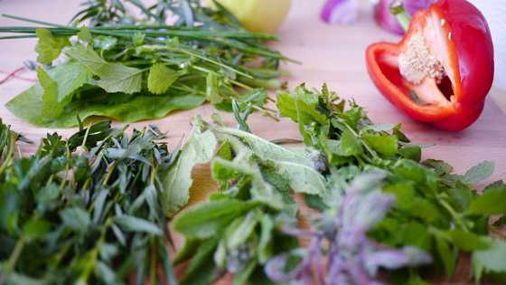
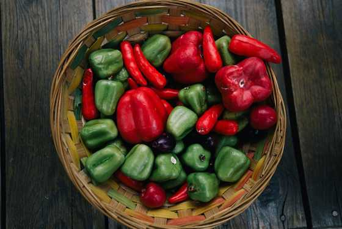
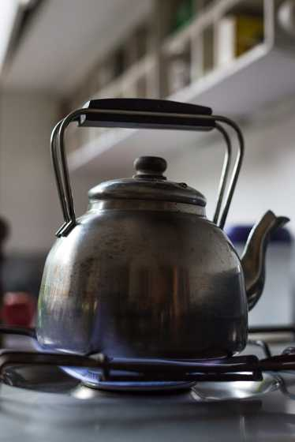
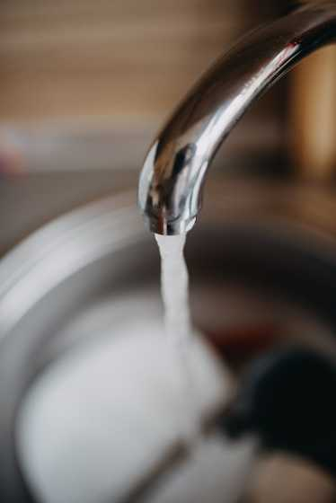

ABOUT
お店の由来・想い
「いつか自分でカフェをやってみたい」という憧れを持っていたオーナーが、家事と子育ての合間に少しずつ準備を重ね、子育てが落ち着いたタイミングで決意して、2020年7月に開いたお店だと、開店時の取材記事で紹介されています。
住宅街の細い路地の奥にあり、席は4人掛け1つ、2人掛け2つ、カウンター3席という小さな空間。温かみのある照明やドライフラワー、アンティーク調の飾りが並ぶ、隠れ家のような雰囲気と紹介されています。
※店名の意味は確認できていないため、ここでは触れません。上記は2020年当時の記事に基づくもので、現在の様子はInstagramでご確認ください。

VOICE
口コミ
イメージ例
路地を入った先にあって、少しわくわくしました。落ち着いた席でゆっくりいただけました。
ご来店のお客様(創作)イメージ例
サラダまで丁寧で、ひと皿ごとに手作りの温かさを感じました。
ご来店のお客様(創作)イメージ例
席数が少ないので、予約して行くと安心だと思いました。
ご来店のお客様(創作)口コミはいずれも制作側が作成したイメージ例で、実在のお客様の声ではありません。
ACCESS
アクセス
| 所在地 | 〒871-0024 大分県中津市中央町２丁目４−５３ |
|---|---|
| 電話 | 準備中 |
| SNS | Instagram @yaletownkitchen |


写真クレジット
写真はフリー素材のイメージで、店舗の実際の様子ではありません。縮小・切り抜きなどの加工をしています。
- Fresh Herbs (Unsplash) / Thomas Rehehäuser (trehehaeuser) / CC0 1.0(撮影地: 不明)
- Fresh red peppers in a wooden crate / Shixart1985 / CC BY 2.0(撮影地: 不明)
- A woven basket filled with an assortment of colorful vegetables / Shixart1985 / CC BY 2.0(撮影地: 不明)
- Freshly chopped vegetables on a wooden cutting board / Shixart1985 / CC BY 2.0(撮影地: 不明)
- Colorful vegetables simmering in a pot on a stove at home / Shixart1985 / CC BY 2.0(撮影地: 不明)
- Large pot of simmering tomato sauce with wooden spoon / Shixart1985 / CC BY 2.0(撮影地: 不明)
- Pot of boiling water on the stove / Shixart1985 / CC BY 2.0(撮影地: 不明)
- Flame from the burner of a gas stove / BogTar201213 / CC BY-SA 4.0(撮影地: 不明)
- Gas Stove Burner Blue Flame (28409479226) / Federico Cardoner / CC BY 2.0(撮影地: 不明)
- Collection of essential cooking tools hanging on a rustic wall / Shixart1985 / CC BY 2.0(撮影地: 不明)
- Water flows from a kitchen faucet into a metal sink filled with soapy water in a home setting / Shixart1985 / CC BY 2.0(撮影地: 不明)
- Tap-gb0fe5d2cc 1920 / Vien Hoang / CC0 1.0(撮影地: 不明)
ライセンスの詳細は creativecommons.org をご覧ください。